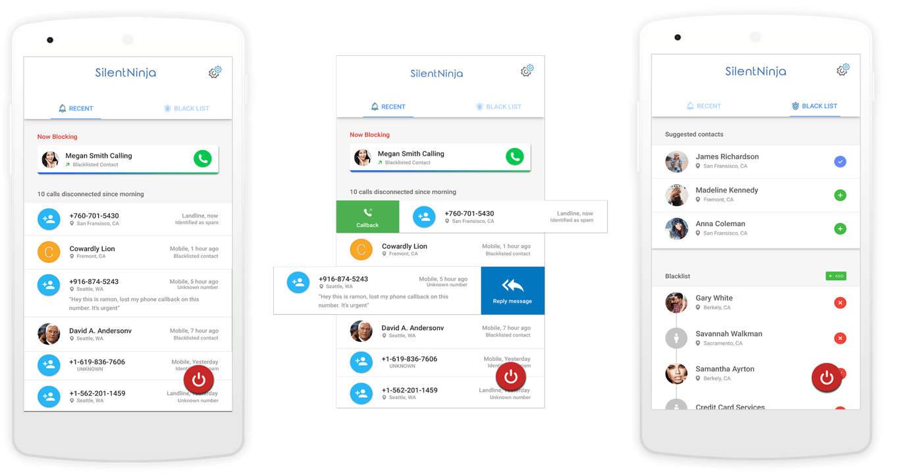

Android App · Call Blocker · 2014
Silent Ninja — a smarter call blocker
A visual and UX redesign of a smart call-blocking Android app — helping people silence calls during meetings, work hours, and movies, with filters for spam and one-tap auto-responses.
Role
Product & Visual Design
Timeline
2014
Platform
Android
Discipline
UX · UI · Branding
Overview
Silent Ninja is a call-blocking app for meetings, work hours, movies, and every other do-not-disturb moment. Smart filters separate spam from repeat callers, and users can auto-respond to incoming calls with an SMS on their own terms.
Platform
Android
My contribution
Visual · Interaction · Branding
Status
Shipped
I collaborated with a Senior Product Designer on the first version of the app, then in 2014 led a re-take to improve the visual design and user experience. What follows is a compilation of the simplified, key views from the redesigned app.
Problem
The challenge
The first version worked, but the interface felt dated and the everyday flows — blocking a caller, managing filters, and setting an auto-response — took more taps and attention than they should.
The goal
Refresh the brand and streamline the core interactions so the most-used actions sit one gesture away, while keeping the app light and quick to understand.
How might we make silencing a call feel effortless — in a single gesture?
Solution
The redesigned experience

Slidable list items
The most-preferred actions surface directly on each list item, so blocking or responding is a single swipe instead of a buried menu.
A simple two-tab layout
The whole app is organised into two clear tabs, keeping navigation shallow and the mental model easy to hold.
Smart filters
Filters distinguish spam from repeat callers, so the right calls get through while the noise stays silenced.
Auto-respond via SMS
When a call is silenced, the app can reply with an SMS on the user's consent — a small courtesy that closes the loop.
Slidable list items with the most-preferred actions, organised into a simple two-tab layout.
Thanks for reading 🙌